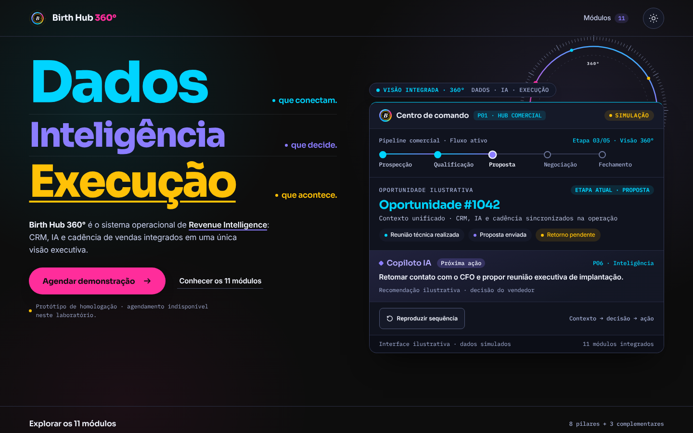
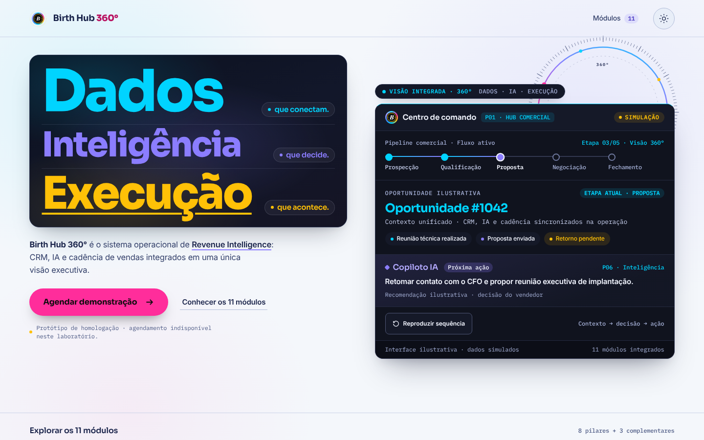
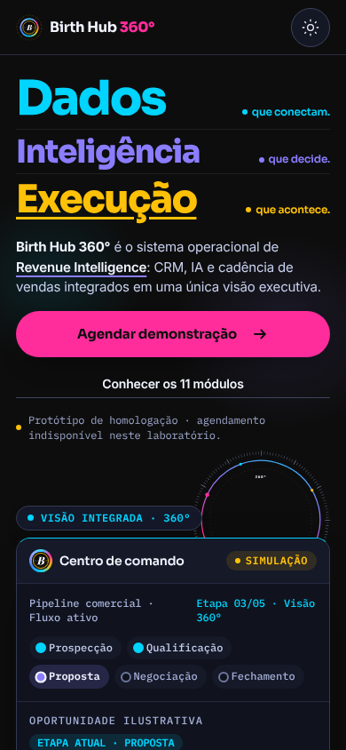
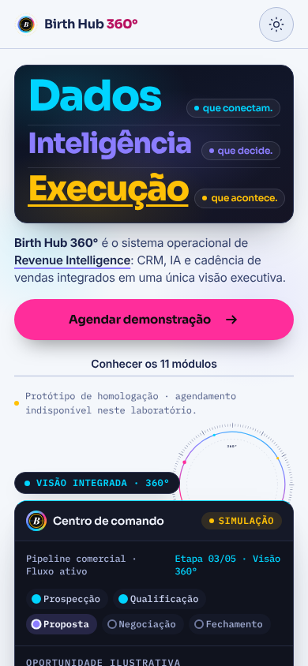

V2.1 — RASCUNHO, NÃO HOMOLOGADO · Índice
Referência N1: Experiência Comercial
Análise do N1 Final Candidate (Neon Editorial Cinematic) e como ele entra na V2.0. O N1 é referência criativa da Experiência Comercial (modo Persuade). Ele não define regras para os workspaces operacionais.
1. Fontes e acesso (verificado)
| Fonte | Acesso | Como foi usada |
|---|---|---|
Repositório github.com/MaarkssDN/Land-page | ACESSÍVEL por clone anônimo (git proxy) | Commit 0d08b31 (2026-11-13). Lidos: mission-06/RELATORIO-MISSAO-06.md, PRODUCT.md, n1-final/index.html, final-candidate.css, final-candidate.js, assets de marca. |
Página publicada maarkssdn.github.io/Land-page/mission-06/n1-final/ | INACESSÍVEL neste ambiente (proxy recusa o túnel, HTTP 403) | Não analisada. Impedimento comprovado: curl retornou "CONNECT tunnel failed, response 403". Não foi verificado se a página publicada corresponde ao commit. Substituí por renderização local do mesmo código em Chromium. |
2. O que o N1 é
Hero de landing para diretoria e C-level: três linhas editoriais (Dados / Inteligência / Execução em azul, íris e dourado), anel 360° nas quatro cores, "Centro de comando" ilustrativo com pipeline de 5 etapas, oportunidade #1042 e copiloto IA, tudo rotulado "Simulação" e "ilustrativa". CTA primário em rosa. Dark e Light com qualidade equivalente. Zero gradiente em texto (0 ocorrências de background-clip: text).
3. Afirmações do relatório do N1 que reverifiquei
| Afirmação (RELATORIO-MISSAO-06) | Minha verificação | Resultado |
|---|---|---|
| Impeccable detect: 0 achados | impeccable detect n1-final/index.html, saída vazia, exit 0 | CONFIRMADO |
| Sem overflow horizontal (desktop e mobile, dark e light) | Chromium 1440 e 390, scrollWidth ≤ innerWidth nas 4 combinações | CONFIRMADO |
| Fundos oficiais #0D0D0D e #F4F7FB | Fundo computado do body, dark e light | CONFIRMADO |
| Sora, Inter e IBM Plex Mono | document.fonts: as três carregadas | CONFIRMADO |
| prefers-reduced-motion respeitado | Contexto com reducedMotion: reduce: 0 animações em execução; sem loops infinitos em nenhum modo | CONFIRMADO |
| Logos oficiais preservados | cmp byte a byte dos 3 SVGs contra identidade-visual/birthhub360/logos/ | IDÊNTICOS |
| Contraste, CLS, LCP e as 8 cenas | Não repeti (CLS e LCP dependem de medição de carga que não reproduzi) | NÃO VERIFICADO |
Ruído de ambiente: o console do Chromium registra 2 erros de CORS em file:// nos <link rel="preload"> das fontes. As fontes carregam normalmente pelo @font-face. Isso é artefato de abrir o arquivo localmente, não defeito do N1.
4. Incorporação à V2.0
| Elemento do N1 | Equivalente V2.0 | Relação |
|---|---|---|
Easing cubic-bezier(.16,1,.3,1) | --ease-out do Motion System | IDÊNTICO |
| Revelação de palavras 0,68 s; placa 0,8 s; anel 1,15 a 1,2 s | --dur-slow 600 ms e --dur-cinematic 1200 ms no nível Comercial | COMPATÍVEL (dentro do teto de 1200 ms) |
Reduzido: animation: none | V2.0 mantém só fade de 120 ms | N1 é mais estrito; ambos válidos. Decisão H-11 abaixo. |
| Paleta Neon e Íris; sucesso #22C55E; erro #EF4444 | C02 e semânticas do DS | IDÊNTICO |
| Sora, Inter e IBM Plex Mono | C03 | IDÊNTICO |
| Textos #C8D0EE e #F2F5FF no dark; #33406A e #19234A no light | --ink #E8EEFF e #0F1A2E, --ink-muted | DIVERGENTE por poucos tons; ambos evitam branco e preto puro. Decisão H-06. |
| Light comercial: "estúdio" escuro #0D1222 sobre canvas #F4F7FB | Variantes de texto derivadas (V2.0) | ALTERNATIVAS legítimas. Decisão H-05. |
| Marca no cabeçalho como símbolo + texto vivo "Birth Hub 360°" | Placa escura para o wordmark horizontal no Light | ALTERNATIVA ao problema de contraste do wordmark. Decisão H-09. |
| Grafia "Birth Hub 360°" em título, marca, copy e PRODUCT.md | P-01 usa "Birthub 360°" | EVIDÊNCIA NOVA para a grafia. Decisão H-01. |
5. Limite entre comercial e operacional
O N1 não tem workspace operacional. Aplicam-se à Experiência Comercial: tipografia editorial gigante, anel 360° animado na entrada, revelação em sequência, placa de produto ilustrativa e CTA rosa. Os workspaces seguem o nível Operacional (80 a 200 ms, sem loops decorativos, sem parallax). A regra BB-LING-02 e o Motion System já dizem isso.
6. Capturas do N1 (renderização local)




Dados do N1 (KPIs, oportunidade, recomendação) são ilustrativos e rotulados como tal no próprio N1.